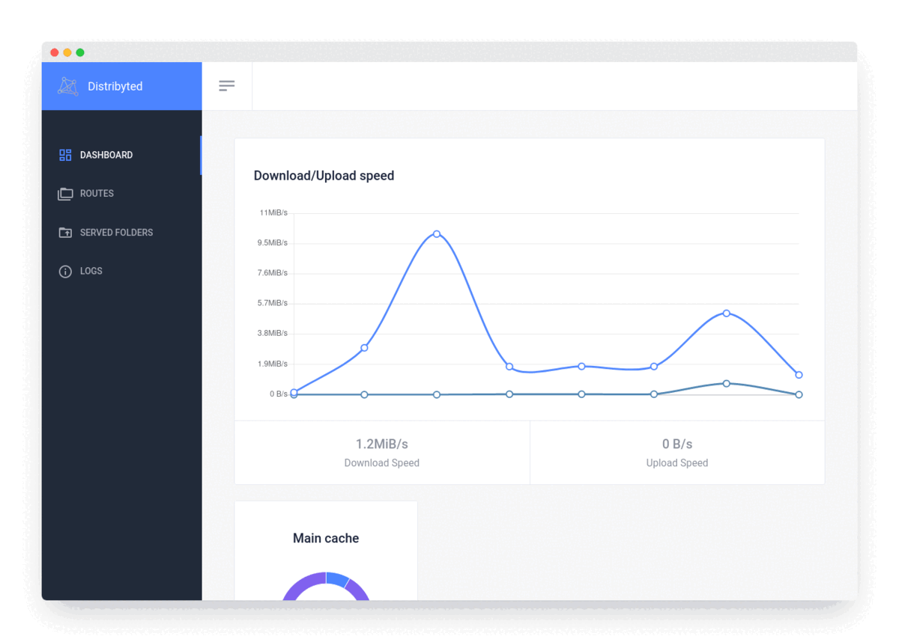

Home
Distribyted is an alternative torrent client. It can expose torrent files as a standard FUSE mount or webDAV endpoint and download them on demand, allowing random reads using a fixed amount of disk space.

Features¶
User Interfaces¶
Distribyted supports several ways to expose the files to the user or external applications:
Supported¶
- FUSE: Other applications can access to torrent files directly as a filesystem.
- WebDAV: Applications that supports WebDAV can access torrent files using this protocol. It is recommended when distribyted is running in a remote machine or using docker.
- HTTP: A simple HTTP interface for all the available routes. You can acces it from
http://[HOST]:[PORT]/fs
Expandable File Formats¶
Distribyted can show some kind of files directly as folders, making it possible for applications read only the parts that they need. Here is a list of supported, to be supported and not supported formats.
Supported¶
- zip: Able to uncompress just one file. The file is decompressed to a temporal file sequentially to make possible seek over it. The decompression stops if no one is reading it.
- rar: Thanks to rardecode experimental branch library, it is possible to seek through rar files.
- 7zip: Thanks to sevenzip library, it is possible to read
7zfiles in a similar way that is done using thezipimplementation.
To Be Supported¶
Not Supported¶
- gzip: As far as I know, it doesn't support random access.